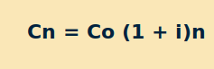
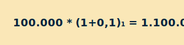
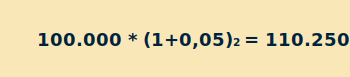
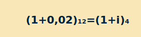

1. Georreferenciación
1. Georreferenciación
La georreferenciación es un proceso de localización geográfica dentro de un sistema de coordenadas, cuyo objetivo es ubicar una dirección dentro de un mapa como lo dicen Cáceres y Larco (2015) “la georreferenciación es el posicionamiento en el que se define la localización de un objeto espacial representado mediante punto, vector, área y volumen en un sistema de coordenadas y datos determinado”.
Este punto generalmente está asociado con algunos datos sociodemográficos como el estrato, el barrio, la localidad entre otros y se puede hacer a través de elementos tecnológicos satelitalmente rastreados o manera manual por medio de un mapa de datos y direcciones de los clientes.
1.1. Objetivos.
Con la georreferenciación se logran grandes desarrollos geográficos y espaciales entre los que se encuentran:
Conocer la cobertura geográfica de la zona.
Entender la ubicación geográfica de clientes en mapas.
Analizar el cliente.
1.2. Zonas.
Indica la división de un área geográfica en sectores homogéneos, conforme a ciertos criterios, por ejemplo, las empresas pueden dividir los territorios donde tienen influencia de clientes por zonas para mayor control de ventas, y asesores que atiendan dichos clientes, o por cualquier otro aspecto que la empresa considere, en cuanto a las entidades microfinancieras zonifican las áreas para asignación de asesores de crédito en determinados lugares, así tendrán claro a qué clientes se van a dirigir conociendo las características de la zona, que tipo de mercado se encuentra allí, teniendo una asesoría personalizada que genere confianza con los clientes, si al asesor de microcrédito le referencian un cliente que se encuentra en otra zona que no es la de él, deberá entregarlo al compañero asesor que tenga asignada la zona donde se encuentra dicho cliente.
2. Productos y servicios microfinancieros
Los productos y servicios microfinancieros generalmente son los beneficios tangibles e intangibles que una entidad financiera o microfinanciera entrega exclusivamente a sus clientes microempresarios.
2.1. Tipos y características.
Son los centros de relación entre la entidad y sus usuarios, estos son los más relevantes según su nivel de prestación:
El microcrédito
Tarjetas de crédito
Microahorro
Microseguros
CDT´s
Oficina virtual
PSE
Banca Móvil
Tarjeta débito
Entre otros dependiendo del portafolio de la entidad.
A continuación se hace la explicación de cada uno y sus características más representativas.
2.2. Características.
Las características dependen en gran medida de las políticas de cada entidad, sin embargo, nivel general se encuentran:
Microcrédito:
Préstamos pequeños, que se usa para impulsar proyectos productivos: su destino puede ser capital de trabajo, adquisición de activos fijos productivos, inclusive libre inversión entre otros.
La amortización o pago de capital depende de cada proyecto, y puede ser a corto o mediano plazo.
Pueden existir períodos de gracia o no pago y en otros devolución parcial o total del dinero.
El valor dependerá de la necesidad del negocio y la capacidad de endeudamiento.
Las tasas de interés máximo son estipuladas por la Superintendencia Financiera de Colombia.
La garantía dependerá de la política de crédito de la entidad.
Entre otros.
Tarjetas de crédito:
Tasas de interés preferencial.
Compras nacionales e internacionales.
Disponibilidad de avances (dinero en efectivo).
Con ella puede realizar pagos de insumos para la microempresa.
Puede tener asistencias y seguros exclusivos para microempresarios.
Los cupos dependen de la política de crédito de la entidad y de la capacidad de endeudamiento del microempresario.
Entre otros.
Microahorro.
Las cuentas de ahorro tendrán características diferentes dependiendo de la entidad financiera, podrán:
No tener cuota de manejo.
Tener retiros ilimitados.
No requerir saldos mínimos.
Contar con el beneficio de no cobro del 4x1000.
Montos mínimos de apertura.
Medios de manejo: tarjeta débito o libreta.
Liquidación de intereses (según promedios).
Seguro FOGAFIN
Entre otros.
Microseguros.
Son una forma de protección económica dirigida a los pobres, frente a una amenaza o contra la posibilidad de sufrir alguna pérdida humana o material como lo expone López (2018) en estos tres puntos:
Buscan prevenir que, ante adversidades económicas inesperadas, las personas de escasos recursos caigan más en la pobreza o se perpetúen en ella.
Su cobertura es limitada y sus primas son de bajo costo.
Mitigación de las pérdidas económicas de la población pobre frente a los diferentes riesgos.

CDT´s.
Certificados de depósito a término fijo:
Reconoce intereses fijos o variables dependiendo del monto y plazo pactados.
Negociable en la bolsa de valores.
Posibilidad de endoso (transferir a otra persona), antes de su vencimiento.
Seguro FOGAFIN.
Entre otros.
Oficina Virtual
Ahorra tiempo al realizar transacciones desde cualquier lugar.
Minimiza los costos financieros por transacciones y consultas.
Accede al portafolio de productos y servicios financieros de la entidad.
Dispone de la información financiera.
Se pueden matricular cuentas de otras entidades, así como facturas y servicios públicos.
Se pueden realizar transacciones como avances de tarjeta a cuentas de ahorro o corriente, abonos a créditos, recarga de celulares.
Entre otros.
PSE (Pagos Seguros en Línea).
Como lo dicen en el Colegio Agustiniano en 2016 en su instructivo PSE “Sistema centralizado y estandarizado, desarrollado por ACH Colombia, donde las empresas brindan a los usuarios la posibilidad de realizar sus pagos y/o compras a través de internet, debitando los recursos de la entidad financiera donde tenga su dinero y depositándolos en la cuenta de las empresas”.
Confirma e identifica en línea y en tiempo real las transacciones.
Ahorra gastos operativos, tiempos y recursos.
Evita errores en pagos y/o recaudo.
Brinda seguridad y agilidad al reducir el manejo de efectivo.
Entre otros.
Banca Móvil.
Alternativa que ofrecen las entidades financieras, se puede usar a través del teléfono celular, teniendo acceso inmediato a los productos para realizar transacciones, las operaciones que se pueden realizar por este medio son:
Se pueden realizar consultas, realizar pagos.
Tienen medidas de seguridad y elimina traslados innecesarios ahorrando tiempo.
Servicios las 24 horas.
Agilidad en trámites.
Reducción de costos.
Entre otros.
Tarjeta débito.
Es un medio de manejo para las cuentas de ahorro y/o corriente de los clientes, son los plásticos con los que se caracteriza al cliente para ser reconocido por los canales digitales análogos como los son los datáfonos y los cajeros electrónicos, estos elementos tienen las siguientes características especiales:
Contiene la información del cliente por medio de un chip.
Se pueden realizar transacciones en oficinas, cajeros automáticos, compras en establecimientos comerciales y por internet.
Hace las funciones del dinero en efectivo sin llevarlo consigo.
Tiene clave para su uso y es asignada por el mismo cliente.
Puede o no tener cuota de manejo (depende del tipo de cuenta y de la política de la entidad).
Entre otros.
Otros productos y servicios financieros con sus características pueden ser consultados en los siguientes links:
Productos y servicios financieros y de seguros básicos, tema 9 en https://elibro-net.bdigital.sena.edu.co/es/lc/senavirtual/titulos/43077
Manual de productos, servicios y activos financieros. Unidad formativa 3: análisis de productos en
https://elibro-net.bdigital.sena.edu.co/es/lc/senavirtual/titulos/50720
3. Normas de etiqueta y protocolo
Es el nombre con el que se conoce el trato cordial, especial y en algunos casos digno que debe tener una persona según su presentación en público, en privado o en algún evento especial y se definen así:
3.1. Etiqueta
Son los usos y costumbres que se deben guardar en actos públicos, habitualmente están establecidos por los diferentes actores de los eventos e inclusive, se entiende en muchos de los casos que existe una reglamentación habitual en vestido, forma de hablar, tiempos y presentación.
3.2. Protocolo Es el conjunto de reglas que establece un grupo, organización o autoridad. Es un contenido parametrizado con el que los diferentes integrantes de los ambientes se tratan para consolidar la forma de presentarse en un gran comportamiento objetivo, el fundamento del protocolo es organizar. La etiqueta orienta la conducta personal, mientras que el protocolo establece el orden. Enlace a: Las empresas tienen sus protocolos donde reglamentan usos, costumbres y comportamientos de sus colaboradores dentro y fuera de la organización, para profundizar en el tema puede dirigirse al siguiente link:
3.3. Manuales Obedeciendo al concepto de manual dado por la Real Academia Española (2020) “libro en que se compendia lo más sustancial de una materia” se presenta esta condición para los bancos de información con los que se debe contar en toda empresa para la gestión de su información, protocolos, códigos y acciones, de esta forma todos los integrantes de la comunidad empresarial entienden con facilidad los pasos a seguir y formas de actuar en los procesos, en pocas palabras, un manual se puede ver como la guía de trabajo con la empresa genera una trazabilidad de sus procesos.
3.3.1. Código de ética o conducta.
Es un documento rector que sirve a las empresas para consignar ciertas reglas y comportamientos que dirigen el actuar de los empleados y directivos en sus relaciones internas y con el exterior articulando la misión y visión de la empresa, así como sus valores y principios.
3.3.2. Beneficios del código de ética o conducta.
Comunicar a los empleados como se espera que actúen en el ambiente de trabajo.
Empoderar a los empleados para manejar dilemas de ética.
Promover el comportamiento ético dentro de la empresa, fortaleciendo, en este sentido, la reputación de la empresa, al distinguirla como compañía confiable.
Ayudar a prevenir violaciones inadvertidas de ética por parte de los empleados, al definir estándares que sensibilicen a los empleados en cómo actuar en situaciones no tan obvias o claras.
Proporciona guía de cómo enfrentar potenciales violaciones de ética, incluyendo las posibles consecuencias para los empleados que hayan incurrido en las mismas.
Constituyen una herramienta en mercadotecnia con prospectos de empleados, clientes, proveedores y demás terceros.
Proporciona un marco común a todos los empleados, fomentando la unidad e identidad.
3.4. Manuales administrativos:
Es un documento que dice paso a paso cómo realizar una actividad, pueden ser utilizados para orientar a un empleado, concentra información amplia y detallada acerca de las bases jurídicas, atribuciones, estructura orgánica, objetivos, políticas, grado de autoridad, responsabilidad, funciones y actividades.
Sirven de apoyo en el manejo del personal, evitará ineficiencia en la productividad, redundancia en la actividad y funciones que opera la empresa, así como la comprensión de los empleados en sus propios papeles dentro de la organización.
3.4.1. Tipos de manuales administrativos.
Dentro de una organización pueden existir varios tipos de manuales administrativos tales como:
3.4.1.7. Manual de actividad económica.
Dependiendo la actividad económica de la empresa podrán existir:
Manual de producción
Manual de compras
3.4.2. Ventajas del uso de manuales administrativos.
La empresa podrá determinar cuántos manuales considere dependiendo de la actividad económica a la que se dedique y la cantidad de procesos que se desempeñen sistémicamente.
Algunas ventajas de tener manuales administrativos en una entidad son las que se presentan a continuación porque:
Logran y mantienen un plan de organización.
Facilitan el estudio de los problemas de la organización.
Determinan la responsabilidad de cada puesto y su relación con los demás en la organización.
Evitan conflictos jurisdiccionales y de funciones.
Son una fuente permanente de información sobre el trabajo a ejecutar.
Ayudan hacer efectivo los objetivos, las políticas, los procedimientos, las funciones, las normas, etc.
Son instrumentos útiles en la capacitación del personal.
4. Inteligencia emocional
4. Inteligencia emocional.
Se entiende por la capacidad de reconocer nuestros propios sentimientos y los de los demás, de motivarnos y de manejar adecuadamente las relaciones.
Dentro de la empresa el colaborador experimenta diferentes emociones, y son precisamente estas habilidades blandas las más importantes en el mundo empresarial actual, para profundizar en la inteligencia emocional puede acceder al siguiente vínculo:
Capítulo 2. ¿Qué es la inteligencia emocional?
https://www-digitaliapublishing-com.bdigital.sena.edu.co/a/37854/como-sobrevivir-al-cambio---inteligencia-emocional-y-social-en-la-empresa
La inteligencia emocional como gran objeto de estudio en el presente siglo tiene la virtud de trabajar en el conocimiento y entendimiento de los sentimientos, la razón y las emociones como se evidencia en el siguiente recurso:
Inteligencia emocional
1. Autoconocimiento:
Entiende como tus emociones influyen en tu estado de ánimo
2. Autocontrol:
Domina tus impulsos. Reflexiona y regula tus emociones
3. Motivación:
Enfoca tus emociones hacia un objetivo determinado
4. Empatía:
Comprende los sentimientos de los demás
5. Relaciones interpersonales:
Aprende a comunicarte correctamente con los demás.
4.1. Capacidades
“Cualquiera puede enfadarse, eso es algo muy sencillo. Pero enfadarse con la persona adecuada, en el grado exacto, en el momento oportuno. Con el propósito justo y del modo correcto, eso, ciertamente, no resulta tan sencillo”.
Aristóteles (349 a.C.) Ética a Nicómaco.
Con esta cita inicia el libro de Inteligencia Emocional del escritor Daniel Goleman del que se reflejan muchas historias de vida ganadoras de aprendizaje continuo para evitar que la razón sea motivada por la emoción como por ejemplo “En una escuela local, un niño de nueve años, aquejado de un acceso de violencia porque unos compañeros de tercer curso le habían llamado <
La idea es identificar las propias emociones y regularlas de forma adecuada.
Esta consta de algunos componentes:
Actitud positiva: es la buena manera de ver determinadas situaciones aun cuando sean adversas.
Conciencia emocional de uno mismo: ser conscientes de nuestros estados de ánimo, y los pensamientos que tenemos de estos estados de ánimo.
Autocontrol emocional: capacidad para manejar las emociones de forma apropiada, teniendo buenas estrategias de afrontamiento a situaciones estresantes.
Competencia social: capacidad para mantener buenas relaciones con las otras personas, lo que implica ciertas habilidades sociales, de comunicación, empatía, respeto, asertividad, etc.
4.2. Habilidades
Son las capacidades que tienen las personas para realizar algunas cosas con facilidad y de manera correcta.
Dentro de la inteligencia emocional existen varias habilidades que se debe aprender a desarrollar tales como:
4.2.1. Competencia para la vida y el bienestar.
Esta habilidad sirve para afrontar satisfactoriamente los desafíos de la vida, adoptando comportamientos apropiados y responsables. Dentro de esta competencia podemos incluir la habilidad para fijar objetivos realistas, toma de decisiones, búsqueda de recursos y ayuda.
4.2.2. Habilidades sociales.
Conductas aprendidas de forma natural, necesarias para entablar relaciones de calidad, y generar vínculos con otras personas.
4.2.3. Habilidades de comunicación.
Capacidad de transmitir información a las personas de manera clara y simple, gracias a estas se pueden dar y comprender instrucciones, aprender cosas nuevas, realizar solicitudes, hacer preguntas etc.
4.2.4. Empatía.
Capacidad de experimentar y comprender las emociones que otra persona está sintiendo, compartir el estado emocional.
Tiene 3 elementos:
a) Atención
b) Sensación de bienestar mutua.
c) Coordinación no verbal.
4.2.5. Optimismo.
Tener fuerte expectativa de que en general, las cosas irán bien.
4.3. Resiliencia
Como lo asegura el neurólogo, psiquiatra, psicoanalista y etólogo francés Boris Cyrulnik(s.f.) “La resiliencia es el arte de navegar en los torrentes”, es la capacidad de ser feliz incluso cuando tienes heridas en el alma.
El afecto en las personas ayuda a la resiliencia, es una especie de motivador.
Cuando las personas se encuentran heridas por alguna circunstancia necesitan transformar ese dolor, por ejemplo: el niño herido que se vuelve altruista, empático y generoso, el niño comprende el dolor más que nadie porque ha pasado por él, o el hijo sin padre que acaba siendo un padre magnífico.
La resiliencia se puede construir por ejemplo cuando se encuentra a alguien que transmita seguridad afectiva, sea profesional o no.
De una manera u otra todos los seres humanos pueden pasar por momentos difíciles, lo importante es no quedarse en ese pasado, sino darle un sentido diferente a la vida, más significativo, que cobre sentido y es en este punto donde cobra relevancia la resiliencia.
4.4. Lenguaje verbal
Cuando se habla de lenguaje verbal se hace referencia a la manera cómo las personas se comunican teniendo en cuenta los siguientes aspectos:
Tono y volumen de voz.
Inflexiones en la voz.
Gestos de la cara, cuerpo y manos.
Postura y distancia.
Sonrisa.
Contacto visual
(expresión, mirada, brillante, triste, pupilas dilatadas).
Contacto físico.
4.5. Lenguaje no verbal
El lenguaje o comunicación no verbal, sirve para reemplazar o complementar las palabras, repite en cierta manera lo que se está diciendo y enfatiza el mensaje verbal, inclusive muestra sentidos diferentes al oído.
A continuación se exponen los tipos de comunicación no verbal más comunes:
4.5.1. Lenguaje corporal.
Nuestros gestos, movimientos, nuestra ropa, forman parte de los mensajes cuando nos comunicamos con los demás.
4.5.2. Lenguaje proxémico.
Es el uso que se le da al espacio específico donde se desenvuelve el hablante y también a la percepción que éste tiene de su entorno cercano.
4.5.3. Lenguaje kinésico.
Son los gestos, movimientos del cuerpo, postura del mismo y las expresiones faciales que utilizan los hablantes sean conscientes o inconscientes.
4.5.4. Lenguaje icónico.
Son las imágenes de los objetos, su representación simbólica. Poseen una doble dimensión, esto es que una ilustración, que se entiende es gráfica, también tiene una explicación escrita.
El lenguaje no verbal es parte inseparable del proceso de comunicación, ya que cuando se comunica, se transmite no solo información, sino también, emociones, afectos, sentimientos.
5. Gestión de la información
La gestión de la información puede ser comprendida bajo dos enfoques distintos; el primero relacionado al profesional de la información como gestor de una unidad de trabajo, en este caso pudiendo ser una red, sistema, unidad o servicio de información; el segundo relacionado a procesos y actividades en una organización, correspondiente a cualquier segmento económico: industrial, comercial, financiero, jurídico, científico, educativo, tecnológico, sindical, de salud, entre otros.
Las personas son bombardeadas de mucha información a lo largo de la vida, es por esta razón que se hace necesario tener una gestión de ella de la mano de una ética ya que mucha información se puede considerar privada y debe ser delicado su manejo.
Se sugiere revisar el capítulo de “1. La gestión de la información en la sociedad digital p. 12” Carabantes (2015) en el siguiente vínculo.
https://elibro-net.bdigital.sena.edu.co/es/lc/senavirtual/titulos/122300
5.1. Tipos de información
La información es un conjunto de datos previamente ordenados y supervisados que logran transmitir un determinado mensaje, lo cual se basa en un fenómeno o en un ente.
A continuación se enuncian y presentan de manera puntual los tipos de información más frecuentes.
5.1.1. Información privilegiada.
Información que aún no se ha hecho pública, de carácter concreto.
5.1.2. Información privada.
Es el tipo de información donde se prohíbe estrictamente su publicación al público en general, ya que su contenido puede llegar a afectar la intimidad de una persona.
5.1.3. Información externa.
Se trata de la información que después de ser creada por ciertas vías externas es que llega a entrar en la organización o en la empresa.
5.1.4. Información pública.
Se trata del tipo de información que se da a conocer al público en general, y que toda persona tiene derecho a ella.
5.1.5. Información semántica.
Es el tipo de información que emplea un medio de información, sean falsas o verdaderas a la hora de transmitirse.
5.1.6. Información selectiva.
Es el tipo de información que solo puede ser transmitida a través de símbolos no semánticos, es decir aquellos símbolos que no están relacionados con los aspectos del significado, sentido o interpretación de algún elemento. Sólo puede transmitirse por medio de afirmaciones verdaderas o falsas.
5.1.7. Información interna.
Es la información que tiende a circular de forma interna por una organización o una determinada empresa.
5.1.8. Información indirecta.
No es proporcionada directamente por una fuente, sino que se encuentra después de revisar las sugerencias de los documentos idóneos para contenerla.
5.1.9. Información directa.
Se trata de todos los datos que llegan a dar a conocer determinada información que se busca de manera inmediata sin tener necesidad de recurrir a otro tipo de fuente
5.2. Métodos de recolección
La recopilación de información es esencial para comprender y analizar un tópico específico, para tomar buenas decisiones comerciales y para desarrollar productos valiosos y atractivos.
Los métodos dependen del tipo de investigación, podrá ser cualitativa, cuantitativa o mixta.
La investigación cuantitativa implica la recopilación de datos numéricos, usan datos medibles para formular hechos y descubrir ciertos patrones. Si la investigación no necesita números entonces es cualitativa, estas necesitarán un muestreo y diseño de muestra.
Algunos métodos cuantitativos de recopilación de datos de investigación son:
Encuestas con preguntas cerradas.
Ensayos / experimentos clínicos.
Extracción de datos de la computadora y sistemas de información.
Observación y registro de eventos
Algunos métodos cualitativos de recopilación de datos de investigación son:
Revisión de documentos.
Entrevistas en profundidad.
Métodos de observación
Con respecto a la información la ética es un concepto fundamental y para adentrarse en él se recomienda que revise el contenido del “Capítulo I. Sociedad y ética: aproximación conceptual” Ética de la información Buxarrais & Prats (2013).
El documento está en el siguiente enlace:
https://elibro-net.bdigital.sena.edu.co/es/lc/senavirtual/titulos/56316
6. Tecnologías de la información y la comunicación
Las Tecnologías de la Información y las Comunicaciones (TIC), son el conjunto de recursos, herramientas, equipos, programas informáticos, aplicaciones, redes y medios; que permiten la compilación, procesamiento, almacenamiento, transmisión de información como: voz, datos, texto, video e imágenes. Como lo dice Quiroga et. Al. (2014) “el proceso de transición de las últimas tres décadas hacia una economía global, fundamentalmente en el uso de la información y del conocimiento, ha consolidado nuevas fuentes de crecimiento empresarial y productividad”.
En los últimos años se ha hecho indispensable el uso de las nuevas tecnologías para obtener información cada vez con mayor velocidad incluso solo con un clic, se borran las distancias para la comunicación entre las personas, en el siguiente enlace podrá obtener mayor información:
https://www-digitaliapublishing-com.bdigital.sena.edu.co/a/47656/la-gestion-del-conocimiento-y-las-tecnologias-de-la-informacion-y-la-comunicacion-en-las-organizaciones
6.1. Plataformas tecnológicas
Una plataforma tecnológica es un entorno para crear y ejecutar aplicaciones, sistemas y procesos.
Los siguientes son tipos comunes de plataforma tecnológica.
6.2. Aplicación y usos de procesadores de texto.
Una aplicación (también llamada app) es simplemente un programa informático creado para llevar a cabo o facilitar una tarea en un dispositivo informático.
Los procesadores de textos son aplicaciones informáticas destinadas a la creación, edición, modificación, corrección e impresión de documentos de texto.
Por lo general todos los procesadores de textos son capaces de trabajar con diferentes tipos de fuentes, interlineado, alineación, tamaño de letra, corrección ortográfica y gramatical, el trabajo con imágenes y tablas, además de contar con diccionarios en varios idiomas para facilitar la labor de redacción, así como proceder a utilizar herramientas para resaltar determinadas palabras o frases. Es decir, nos da la oportunidad de usar recursos tales como la negrita, la cursiva o el subrayado.
7. Técnicas de ventas
Las técnicas de ventas son las estrategias que tenemos para persuadir al potencial cliente para que realice la compra.
Algunas técnicas clásicas son:
AIDDA
Atención, Interés, Demostración, Deseo y Acción.
SPIR
Situación, Problema, Implicación, Resolución.
AICDC
Atención, Interés, Convicción, Deseo y Cierre.
SPIN
Situación, Problema, Implicación y Necesidad.
Ofrecer valor agregado
Ofrecer algo extra será una garantía, tener el mejor precio en el mercado puede ser una buena opción.
El sitio de venta
Es importante el sitio donde se desarrolle el e-commerce, espacios como Buscapé, Mercado Libre o Qué Barato, para vender productos.
Actualización constante
Importante la actualización del sitio, fotografías nuevas o nuevas ofertas, esto genera confianza en la clientela.
De difusión
Será clave que busques la manera de tener la mejor posición en los buscadores de internet como Google o Bing.
Estudio de mercado
La investigación en el mercado es importante porque es el mejor instrumento para entender y gestionar las acciones para el público objetivo.
La fórmula del éxito de las empresas en sus ingresos es la manera como venden sus producto y servicios y sus técnicas, para conocer algunas técnicas y casos reales de empresas que implementaron estrategias de marketing puede hacer clic en los siguientes enlaces:
Aplicación de técnicas de venta p. 63 del libro Técnicas de venta: UF0031. Arenal (2017). https://elibro-net.bdigital.sena.edu.co/es/lc/senavirtual/titulos/44231
7.10. Asesoría integral
El asesoramiento integral es un asesoramiento para todos los aspectos de su situación financiera.
El asesoramiento integral se relaciona con una situación financiera en conjunto, por lo que el resultado final es un plan financiero que cumple con sus objetivos a través de un conjunto de recomendaciones altamente personalizadas e interrelacionadas.
7.11. Parámetros de entrevista
Estos dependerán muchas veces del tipo de empresa y el tipo de cliente al que se vaya a dirigir el asesor, sin embargo, a nivel general se deben tener algunos parámetros de entrevista que le serán de gran ayuda:
Definir la persona a contactar, conocer el tipo de cliente al que se va a dirigir, sus características, segmentación al que corresponde.
Definir el producto o productos a vender en función de la información.
En el momento de verdad con el cliente, tendrá en cuenta el proceso de comunicación, la escucha activa, el lenguaje verbal y no verbal.
El asesor deberá tener en cuenta la técnica de las preguntas.
Importante el manejo de objeciones.
Tener en cuenta las técnicas de cierre.
7.12. Promoción (marketing digital)
El marketing digital es la aplicación de las estrategias de comercialización llevadas a cabo en los medios digitales, sirve para acercar productos o servicios a posibles clientes en los medios digitales.
En el Marketing digital existen al menos dos tipos de conversiones:
Conversiones micro.
Este tipo de conversiones están asociadas a acciones que realiza un usuario que tienen un interés secundario para nuestros objetivos principales, por ejemplo, permanecer en cierta página durante cierto tiempo, hacer clic en un botón, etc.
Conversiones macro.
Las conversiones macro son aquellas que están asociadas a nuestros objetivos principales, por ejemplo, venta realizada, suscripción a newsletter, envío de formulario de contacto, etc.
La estrategia de marketing digital es un conjunto virtuoso de diseño, creatividad, rentabilidad, ingenio y análisis donde debemos mantener siempre claro el objetivo de conseguir un óptimo retorno de la inversión.
En el marketing digital se utilizan una enorme variedad de herramientas con el fin de optimizar las tareas en las distintas áreas involucradas en nuestra actividad.
Se relacionan algunas de ellas divididas por área:
Analítica web.
Google Analytics, Search Console, Majestic, Google Tag Manager, etc.
Paid wedia.
Google Ads, MCC, Bing Ads, Facebook Ads, Twitter Ads, etc.
Seo.
Moz, OnCrawl, Screaming Frog, Yoast, Ahrefs, Semrush, etc.
Social media.
Hootsuite, Later, Buffer, Bitly, All Hashtag, Storrito, etc.
Email Marketing.
ClicExperts, MailChimp, etc.
Diseño.
Photoshop, GIPHY, GIMP, Canvas, Unsplash, etc.
IT.
Wordpress, WpBakery Page Builder, Notepad++, FileZilla.
Reporting.
Google Data Studio, Google Spreadsheets, Power Point, etc.
CRM.
Zoho, Salesforce, HubSpot, etc.
Herramientas colaborativas: Asana, Trello, Jira, etc.
7.13. Conocimiento de los competidores
En primer lugar, es preciso saber identificar quiénes son sus competidores. En general, son todas las empresas formales e informales que responden a las mismas necesidades del público-objetivo. Es decir, todos los que ofrecen un producto para solucionar un mismo problema. Una pastelería y una hamburguesería no ofrecen el mismo producto, pero son competidores porque responden a una misma necesidad, la alimentación.
¿Cómo evaluar la competencia?
Se sugieren tres fuentes de información:
7.13.1. Fuentes académicas.
Esa competencia ya fue investigada, relevada, identificada y caracterizada en muchas revistas, análisis de economistas, periódicos, libros y artículos técnicos.
7.13.2. Conocimiento consensuado.
También es recomendable levantar información sobre la competencia a través de boca a boca, las conversaciones con la comunidad y los competidores que están insertos.
7.13.3. Relevamiento propio.
Una tercera fuente de información puede ser el propio empresario porque él mismo puede hacer la identificación de los principales competidores, convertirse en un cliente y buscar información sobre precio, cantidad, posicionamiento, localización, etc.
7.14. Términos y condiciones
Cuando se trata de contratos, ambas partes deben comprender completamente todos los elementos de un contrato.
El contrato en sí debe incluir lo siguiente:
Oferta
Aceptación
Consideración
Partes que tienen capacidad legal
Materia legal
Mutuo acuerdo entre ambas partes
Comprensión mutua de la obligación
Dichos términos y condiciones identificarán los derechos y responsabilidades de ambas partes, esto puede incluir condiciones generales y especiales. Una condición general es aquella que es común y está incluida en la mayoría de los contratos. Las condiciones especiales son aquellas que son específicas de ese contrato, es decir, pago, variación de precio, penalizaciones, etc.
Si bien no son obligatorios los términos y condiciones son altamente beneficiosos para ambas partes básicamente, le otorga el derecho de prescindir del contrato si la otra parte no cumple con dichos términos y condiciones.
8. Centrales de información
Las bases de datos o centrales de información en Colombia son la Central de Información de la Asociación Bancaria y de Entidades Financieras de Colombia -CIFIN-, Datacrédito, Covinoc, Computec, Credicheque, Fenalcheque, etc...
Estas entidades son sociedades o agremiaciones de carácter privado en las cuales se registra el comportamiento crediticio, financiero y comercial de las personas que celebren operaciones con entidades financieras, cooperativas y empresas del sector real.
8.1. Buró de crédito
El buró de crédito es una empresa privada, independiente de las instituciones financieras, de las comerciales y de las gubernamentales, que tiene como fin concentrar y proporcionar a sus empresas afiliadas, la información referente al comportamiento que han tenido las personas físicas y morales con respecto a sus créditos.
8.2. Tipos de consulta
Existen básicamente 2 tipos de consulta: interna y externa
Interna.
Es la que se realiza al interior de las empresas, normalmente las entidades financieras, tienen sus propias consultas internas, es decir observan el comportamiento financiero de sus clientes con sus productos y servicios.
Externa
Son las realizadas por las centrales de riesgo las cuales almacenan los datos de identificación, ubicación demográfica, comportamiento de pago y nivel de endeudamiento. De acuerdo con la ley 1266 de 2008, tienen la competencia de llevar y conservar los datos de las personas que celebran operaciones crediticias con entidades financieras o empresas.
Entre las principales centrales de riesgo en Colombia se encuentran:
Datacrédito
Central de Información Financiera (CIFIN)
Fenal cheque
Covinoc
Procrédito
Como lo dice Finandina (2020) “las centrales de riesgo en Colombia verifican tus datos crediticios de forma mensual. Es decir que revisan los pagos realizados de forma puntual, las deudas por pagar, los ingresos y tu capacidad de pago. A su vez, registran y evalúan tus finanzas. Ten presente que se puede obtener información hasta de los últimos 24 meses”.
Continúa Finandina (2020) diciendo “si cuentas con un reporte negativo, esta información no podrá exceder los cuatro años en la base de datos. De acuerdo con la Sentencia C-1011 de 2008, este tiempo será contado a partir de la fecha en que se cancelen las cuotas u obligaciones vencidas. Además, si la deuda contraída es menor a dos años, no podrá permanecer el doble del tiempo en que incurrió en mora”.
8.3. Interpretación
Su interpretación dependerá del buró de crédito al cual se este refiriendo, por ejemplo: en CIFIN Central de Información Financiera aparecerán todos los datos de la persona a quien se esté consultando con todos los productos del activo y del pasivo, vigentes o cancelados que tenga o haya tenido al momento de la consulta en los tres sectores de la economía: sector financiero, real y solidario.
En la consulta a la CIFIN se encuentra la siguiente información:
Resumen de endeudamiento.
Información de cuentas (corriente y de ahorros).
Información de endeudamiento en los sectores financiero, asegurador y solidario.
Información de endeudamiento en el sector real (adquisición de bienes y prestación de servicios).
Huella de consulta últimos 6 meses.
Endeudamiento Global: consolidado trimestral.
Endeudamiento Global: información detallada.
Endeudamiento Global: actualizaciones.
8.4. Autorizaciones
La Ley Habeas Data busca proteger los datos personales de los colombianos. Eso quiere decir que cualquier persona natural o jurídica que desee usar un dato personal que aparece en una base de datos debe cumplir un requisito, el de solicitar la respectiva autorización del titular de ese dato. Si no lo hace, infringe la ley y se someterá a una sanción por parte de la Superintendencia de Industria y Comercio-SIC
8.5. Reporte de dichas centrales.
De acuerdo con el Artículo 14 de la Ley 1266 de 2008, en el historial de crédito, se reporta la información positiva y negativa del titular. Por información positiva debe entenderse aquella que evidencia el buen comportamiento de pago del titular, es decir, cuando el titular cumple la obligación en el tiempo y forma debida. Por otra parte, el reporte de información negativa refleja el estado de mora en las cuotas u obligaciones del titular cuando no se cumplen en el tiempo y forma de pago debida.
Es importante tener en cuenta que el reporte de información positiva o negativa no sólo se refiere a obligaciones contraídas con entidades financieras, como créditos de vivienda o tarjetas de crédito, también incluye las obligaciones contraídas con establecimientos de comercio como líneas de telefonía celular y televisión por cable, entre otros servicios o incumplimiento en pago de productos.
Es importante mantener el buen nombre frente a las entidades financieras, del sector real y solidario, para ello se hace necesario tener en cuenta las finanzas personales como herramienta fundamental, para conocer más sobre este tema puede dar clic al siguiente enlace:
Libro Finanzas personales, su mejor plan de vida. Capítulo 1. Conceptos iniciales p.16. Rodríguez (2017).
https://www-digitaliapublishing-com.bdigital.sena.edu.co/a/54794/finanzas-personales--su-mejor-plan-de-vida
9. Matemáticas financieras
La matemática financiera incluye las matemáticas aplicadas que estudian el valor del dinero en el tiempo en una operación financiera.
9.1. Interés simple.
Tasa aplicada sobre un capital inicial que permanece constante en el tiempo y no se añade a períodos sucesivos.
La fórmula que utilizaremos para calcular el interés simple será la siguiente:
Siendo Co el capital inicial prestado, i la tasa de interés, n el periodo de tiempo considerado y Cn el capital final resultante.
9.2. Interés compuesto
Activos monetarios que se van añadiendo al capital inicial y sobre el que se van generando nuevos intereses.
Los intereses generados se van sumando periodo a periodo al capital inicial y a los intereses ya generados anteriormente. De esta manera, se crea valor no sólo sobre el capital inicial, sino que los intereses generados previamente ahora se encargan también de generar nuevos intereses. Es decir, se van acumulando los intereses obtenidos para generar más intereses.
La fórmula es la siguiente:
Siendo Co el capital inicial prestado, i la tasa de interés, n el periodo de tiempo considerado y Cn el capital final resultante.
9.3. Anualidades
Significa pagos realizados a intervalos iguales de tiempo, que pueden ser anuales, trimestrales, mensuales quincenales, diarios, etc.
Existen cinco tipos de anualidades las cuales son:
Anualidades vencidas
Anualidades anticipadas
Anualidades diferidas
Anualidades generales
Anualidades simples
En la anualidad anticipada los pagos se realizan al inicio de cada periodo, es decir, al momento de realizar el contrato u operación.
Las anualidades diferidas la operación se realiza específicamente un día y después de cierto plazo se comienzan a liquidar las anualidades.
Las anualidades generales hacen referencia al periodo en que se realizan los pagos normalmente coincide con el periodo de capitalización de las anualidades, aunque en ocasiones no coinciden.
Así lo dice Avalos (2003) “las anualidades simples, opuesto a las generales aquí el periodo de pago y el periodo de capitalización de la tasa si coinciden”.
9.4. Conversión de tasas de interés anuales y periódicas
Las instituciones financieras usan la tasa de interés efectiva con mayor frecuencia, la usan para informar las rentabilidades de sus inversiones o de cuánto le costaría solicitar un préstamo en dicha institución, esta tasa se indica de manera porcentual, cuanto es lo que se renta o cuanto es el costo sobre una cantidad de dinero a invertir o solicitar a un periodo determinado. A pesar que la periodicidad puede ser clasificada de diferentes formas para estas tasas.
La tasa de interés nominal es una tasa expresada anualmente, genera intereses en varias ocasiones a la periodicidad que aplica, esta tasa no es exacta como la efectiva, por que la tasa nominal es la teoría, no analiza si el usuario tiene que pagar gastos y otros costos.
La tasa periódica es la tasa que corresponde al período determinado (% por día, mes, bimestre, trimestre, semestre, año).
Ejemplo:
Pedro de la Torre pide $1.000.000 a una tasa efectiva del 10%. En este caso el cálculo sería de la siguiente manera:
Aplicando dicha fórmula a nuestros datos, se tendrá el siguiente resultado:
En el caso del interés nominal, expresado anualmente, por lo cual si la periodicidad, dice otra cosa, se entiende que durante el periodo que transcurrió, se generaron intereses, por lo cual es muy probable que no se genere la igualdad entre la tasa nominal y efectiva. Utilizando los mismos antecedentes preliminares, pero asumiendo que la tasa es 10% semestral.
Conociendo que un año tiene dos semestres, por lo cual para la fórmula expresada en anualidad, se usa la división de 10/2= 5%. En este caso y aplicando la fórmula señalada al inicio, el resultado es:
Se divide la ganancia ($10.250), sobre el dinero inicial, existe una diferencia, y esta es generada porque en un semestre, se generaron intereses que aumentaron el capital y en el segundo semestre aumentó ese capital más el interés previo volvió a aumentar para dar como resultado los $110.250. Por lo cual acá la tasa efectiva fue de 10,25% anual y no la nominal de 10%.
9.5. Conversión de tasa efectiva a nominales
Es importante observar la periodicidad en la cual generará intereses, por ejemplo la tasa efectiva es del 2% mensual y la quiero convertir a nominal mensual, simplemente habría que multiplicar por 12, por lo cual la tasa efectiva mensual convertida a nominal mensual arroja el 24% (2%*12 meses), se multiplica por doce porque la nominal por defecto es anual, la aclaración de mensual es para indicar que capitaliza intereses de forma mensual. El inconveniente se da cuando la periodicidad no es la misma.
Ejemplo de conversión de tasa efectiva a tasa nominal con diferente periodicidad.
Una entidad ofrece un crédito a una tasa efectiva del 2% mensual, se desea convertir a la tasa capitalizable trimestral.
La ecuación es:
El desarrollo es:
En este caso se eleva a 12, ya que la tasa es nominal, se debe expresar en años, por otro lado se eleva a 4, porque son 4 trimestres en que se componen un año, es decir, las tasa se convierten en conceptos que son comparables. El resultado de esta ecuación, da 6,12% trimestral aproximado, pero esta tasa es efectiva equivalente a una nominal, por lo cual para saber la nominal es una tasa que se expresa en años y que la periodicidad, es para saber cada cuanto tiempo genera intereses, el 6,12% equivale a efectivamente cuando entrega, por ende, si se multiplica por 4 (cantidad de trimestres que componen un año), la tasa nominal trimestral, es del 24,48%.
La tasa nominal se debe multiplicar por la tasa que se quiere convertir por el número de periodos en los que se puede pagar en un año. Estos períodos son:
Mensual= 30 días
Bimestral= 60 días
Trimestral= 90 días
Cuatrimestral=120 días
Semanal= 180 días
9.6. Conversión de Tasa nominal a tasa efectiva
En este caso, la ecuación utilizada anteriormente, no cambia, para este caso, lo nominal que por defecto viene expresado en anualidad se debe convertir en efectivo y eso utilizar la fórmula para que dé como resultado monto efectivo.
Ejemplo de conversión de tasa nominal a efectiva.
Se tiene un 12% capitalizable mensualmente y se quiere convertir a una tasa equivalente bimensual.
Lo primero que se hace es el 12% dividirlo en 12, dando como resultado 1% mensual, hablando de términos efectivos, para llevarlo al efectivo requerido, se debe aplicar la misma ecuación señalada, la ecuación es la siguiente:
El desarrollo da como resultado que la tasa efectiva es 6,15% semestral efectivo, para saber tasa bimensual, se debe dividir en 3 (dado que un semestre está compuesto por tres bimestres), dando como resultado que la tasa efectiva bimensual, es de 2,05%.
A continuación, se presentará una serie de términos matemáticos, sin embargo, puede dar clic en el siguiente enlace para mayor comprensión y desarrollo de ejercicios relacionados a los temas:
Unidad 1: Matemáticas financieras. Rodríguez (2015). en https://elibro-net.bdigital.sena.edu.co/es/lc/senavirtual/titulos/40386
10. Políticas organizacionales
También llamadas políticas de la empresa o entidades financieras y microfinancieras, estas son importantes para el funcionamiento de las mismas, se podría decir que son como las reglas de juego de las compañías para su organización y cumplimiento de objetivos.
En las políticas se establecen las directrices básicas sobre los procesos y comportamientos de sus colaboradores, estos se encuentran establecidos en documentos tales como manuales y políticas de las entidades.
Una empresa debe estandarizar procesos y seguir una serie de lineamientos para lograr sus objetivos, esto lo puede realizar a través de sus políticas organizacionales, para introducir en el tema puede dirigirse a los siguientes enlaces:
Pucheu, (2014). Desarrollo y eficacia organizacional. https://www-digitaliapublishing-com.bdigital.sena.edu.co/a/38233/desarrollo-y-eficacia-organizacional
10.1. Lineamientos
Las entidades financieras y microfinancieras adoptan unos lineamientos en sus políticas de crédito que dan la pauta para determinar el otorgamiento del microcrédito, se establecen criterios para evaluar a sus clientes y determinar el nivel de riesgo al que se encuentran expuestas con cada crédito desembolsado.
Dentro de estos lineamientos se encuentran también las estrategias en colocación de microcréditos, el mercado objetivo al cual van dirigidos, los límites y procedimiento en el otorgamiento y posterior recuperación de cartera.

Para ilustrar mejor, las siguientes son políticas de una institución microfinanciera para el otorgamiento de microcréditos:
Políticas de la institución de microcrédito:
Monto: créditos solo a dueños de negocio desde $1.000.000 hasta 25 o 120 salarios mínimos legales vigentes.
Plazos: Entre 6 a 24 meses.
Destino del crédito: Solo presta para capital de trabajo o activos fijos.
Interés: 3,6% mensual
Comisión: 7.5% para créditos menores a 4 salarios mínimos y 4,5% para montos iguales o mayores a 4 salarios mínimos legales vigentes.
Características del negocio: Este no puede tener más de 10 trabajadores; en activos totales el valor debe ser inferior a 500 salarios mínimos mensuales legales vigentes, unas ventas anuales máximas de 800.000.000 de pesos colombianos.
Mirar clasificación y preguntar microfinancieras.
Antigüedad del negocio: Mínimo 1 año en el lugar.
Servicios públicos al día.
1 referencia comercial, 1 referencia personal, 1 referencia familiar.
10.2. Requisitos
Los requisitos solicitados dependerán de las políticas de crédito de cada entidad financiera o microfinanciera, también dependerán del monto.
Crédito con cédula, sin codeudor desde $1.000.000 hasta $2.500.000.
Crédito con casa propia desde $2.501.000 hasta $7.000.000 (mostrando certificado de tradición y libertad)
Crédito con codeudor con salario a término indefinido desde $2.501.000 hasta $5.000.000. (Se presta dependiendo del negocio y del salario del codeudor).
Crédito con codeudor con salario a término fijo desde $2.501.000 hasta $3.500.000. (Se presta dependiendo del negocio y del salario del codeudor).
Crédito con codeudor que posee negocio con un año de antigüedad desde $2.501.000 hasta $5.000.000 (Se presta dependiendo del negocio tanto del propietario como del codeudor).
Crédito con codeudor con finca raíz desde $2.501.000 hasta $5.000.000.
Crédito con dos codeudores, pueden ser con finca raíz, salario con contrato a término indefinido o con negocio, se presta desde $5.001.000 hasta 25 salarios mínimos legales vigentes.
Crédito hipotecando la casa propia desde $7.001.000 hasta 25 salarios mínimos legales vigentes.
10.3. Clases
La política organizacional dependerá del tipo de empresa, inclusive del área, en el caso de las entidades financieras y microfinancieras también adoptan distintas políticas algunas como:
Corporativa:
De Derechos Humanos
Generales de sostenibilidad
De riesgo
De crédito
De cobranza
Comercial
De servicios
4. Inteligencia emocional
4. Inteligencia emocional.
Se entiende por la capacidad de reconocer nuestros propios sentimientos y los de los demás, de motivarnos y de manejar adecuadamente las relaciones.
Dentro de la empresa el colaborador experimenta diferentes emociones, y son precisamente estas habilidades blandas las más importantes en el mundo empresarial actual, para profundizar en la inteligencia emocional puede acceder al siguiente vínculo:
Capítulo 2. ¿Qué es la inteligencia emocional?
https://www-digitaliapublishing-com.bdigital.sena.edu.co/a/37854/como-sobrevivir-al-cambio---inteligencia-emocional-y-social-en-la-empresa
La inteligencia emocional como gran objeto de estudio en el presente siglo tiene la virtud de trabajar en el conocimiento y entendimiento de los sentimientos, la razón y las emociones como se evidencia en el siguiente recurso:
Inteligencia emocional
1. Autoconocimiento:
Entiende como tus emociones influyen en tu estado de ánimo
2. Autocontrol:
Domina tus impulsos. Reflexiona y regula tus emociones
3. Motivación:
Enfoca tus emociones hacia un objetivo determinado
4. Empatía:
Comprende los sentimientos de los demás
5. Relaciones interpersonales:
Aprende a comunicarte correctamente con los demás.
4.1. Capacidades
“Cualquiera puede enfadarse, eso es algo muy sencillo. Pero enfadarse con la persona adecuada, en el grado exacto, en el momento oportuno. Con el propósito justo y del modo correcto, eso, ciertamente, no resulta tan sencillo”.
Aristóteles (349 a.C.) Ética a Nicómaco.
Con esta cita inicia el libro de Inteligencia Emocional del escritor Daniel Goleman del que se reflejan muchas historias de vida ganadoras de aprendizaje continuo para evitar que la razón sea motivada por la emoción como por ejemplo “En una escuela local, un niño de nueve años, aquejado de un acceso de violencia porque unos compañeros de tercer curso le habían llamado <
La idea es identificar las propias emociones y regularlas de forma adecuada.
Esta consta de algunos componentes:
Actitud positiva: es la buena manera de ver determinadas situaciones aun cuando sean adversas.
Conciencia emocional de uno mismo: ser conscientes de nuestros estados de ánimo, y los pensamientos que tenemos de estos estados de ánimo.
Autocontrol emocional: capacidad para manejar las emociones de forma apropiada, teniendo buenas estrategias de afrontamiento a situaciones estresantes.
Competencia social: capacidad para mantener buenas relaciones con las otras personas, lo que implica ciertas habilidades sociales, de comunicación, empatía, respeto, asertividad, etc.
4.2. Habilidades
Son las capacidades que tienen las personas para realizar algunas cosas con facilidad y de manera correcta.
Dentro de la inteligencia emocional existen varias habilidades que se debe aprender a desarrollar tales como:
4.2.1. Competencia para la vida y el bienestar.
Esta habilidad sirve para afrontar satisfactoriamente los desafíos de la vida, adoptando comportamientos apropiados y responsables. Dentro de esta competencia podemos incluir la habilidad para fijar objetivos realistas, toma de decisiones, búsqueda de recursos y ayuda.
4.2.2. Habilidades sociales.
Conductas aprendidas de forma natural, necesarias para entablar relaciones de calidad, y generar vínculos con otras personas.
4.2.3. Habilidades de comunicación.
Capacidad de transmitir información a las personas de manera clara y simple, gracias a estas se pueden dar y comprender instrucciones, aprender cosas nuevas, realizar solicitudes, hacer preguntas etc.
4.2.4. Empatía.
Capacidad de experimentar y comprender las emociones que otra persona está sintiendo, compartir el estado emocional.
Tiene 3 elementos:
a) Atención
b) Sensación de bienestar mutua.
c) Coordinación no verbal.
4.2.5. Optimismo.
Tener fuerte expectativa de que en general, las cosas irán bien.
4.3. Resiliencia
Como lo asegura el neurólogo, psiquiatra, psicoanalista y etólogo francés Boris Cyrulnik(s.f.) “La resiliencia es el arte de navegar en los torrentes”, es la capacidad de ser feliz incluso cuando tienes heridas en el alma.
El afecto en las personas ayuda a la resiliencia, es una especie de motivador.
Cuando las personas se encuentran heridas por alguna circunstancia necesitan transformar ese dolor, por ejemplo: el niño herido que se vuelve altruista, empático y generoso, el niño comprende el dolor más que nadie porque ha pasado por él, o el hijo sin padre que acaba siendo un padre magnífico.
La resiliencia se puede construir por ejemplo cuando se encuentra a alguien que transmita seguridad afectiva, sea profesional o no.
De una manera u otra todos los seres humanos pueden pasar por momentos difíciles, lo importante es no quedarse en ese pasado, sino darle un sentido diferente a la vida, más significativo, que cobre sentido y es en este punto donde cobra relevancia la resiliencia.
4.4. Lenguaje verbal
Cuando se habla de lenguaje verbal se hace referencia a la manera cómo las personas se comunican teniendo en cuenta los siguientes aspectos:
Tono y volumen de voz.
Inflexiones en la voz.
Gestos de la cara, cuerpo y manos.
Postura y distancia.
Sonrisa.
Contacto visual
(expresión, mirada, brillante, triste, pupilas dilatadas).
Contacto físico.
4.5. Lenguaje no verbal
El lenguaje o comunicación no verbal, sirve para reemplazar o complementar las palabras, repite en cierta manera lo que se está diciendo y enfatiza el mensaje verbal, inclusive muestra sentidos diferentes al oído.
A continuación se exponen los tipos de comunicación no verbal más comunes:
4.5.1. Lenguaje corporal.
Nuestros gestos, movimientos, nuestra ropa, forman parte de los mensajes cuando nos comunicamos con los demás.
4.5.2. Lenguaje proxémico.
Es el uso que se le da al espacio específico donde se desenvuelve el hablante y también a la percepción que éste tiene de su entorno cercano.
4.5.3. Lenguaje kinésico.
Son los gestos, movimientos del cuerpo, postura del mismo y las expresiones faciales que utilizan los hablantes sean conscientes o inconscientes.
4.5.4. Lenguaje icónico.
Son las imágenes de los objetos, su representación simbólica. Poseen una doble dimensión, esto es que una ilustración, que se entiende es gráfica, también tiene una explicación escrita.
El lenguaje no verbal es parte inseparable del proceso de comunicación, ya que cuando se comunica, se transmite no solo información, sino también, emociones, afectos, sentimientos.
11. Verificación de la información.
Las personas tienen información que se encuentra en entidades vigiladas y esta no puede ser suministrada a terceros distintos a su propio titular o autoridad judicial o administrativa competente, esto, como garantía constitucional conforme a lo señalado en el artículo 15 de la Constitución Política, a esto se le llama reserva bancaria.
11.1. Técnicas de validación
Hace referencia al uso de una gran diversidad de técnicas y herramientas que pueden ser utilizadas por el analista para desarrollar los sistemas de información, entre otros tenemos la entrevista, la encuesta, el cuestionario, la observación, el diagrama de flujo y el diccionario de datos.
Las 5 principales técnicas de recolección de datos son:
11.1.1. Entrevistas.
Es un diálogo dirigido, con un propósito específico por lo general se usa un formato de preguntas y respuestas.
11.1.2. La encuesta.
Agrupación de preguntas las cuales van dirigidas a una muestra representativa de la población o instituciones, cuyo fin es el de conocer estados de opinión o hechos específicos.
11.1.3. La observación.
Es una técnica que sirve para que la persona quien la esté ejecutando participe mirando como espectador el desarrollo de las actividades que lleva a cabo una persona para conocerla mejor.
Permite al observador determinar que se está haciendo, cómo se está haciendo, quien lo hace, cuando se lleva a cabo, cuánto tiempo toma, dónde se hace y porqué se hace.
11.1.4. Diccionario de datos.
Lista de todos los elementos con los diagramas de flujo de datos que explican un sistema.
11.1.5. Diagrama de flujo.
Representación gráfica de un proceso. Útil para determinar cómo funciona realmente el proceso para producir un resultado.
11.2. Respaldo de la información
El asesor microfinanciero dentro de sus funciones se encuentra la verificación de los soportes y de toda la información que presenta el propietario del negocio, en los cuales está toda la documentación en físico que proporciona el cliente tales como:
Facturas de proveedores.
Referencias comerciales de sus proveedores.
Referencias bancarias (si las hay)
Lista de clientes con sus respectivos teléfonos de contacto.
Registro único tributario (si lo tiene)
Contrato de arrendamiento de local donde funciona el negocio (en caso de ser arrendado).
Adicional la información que levanta el asesor comercial como:
Referenciación zonal (información de los vecinos más cercanos al negocio).
12. Administración de riesgos
Es el conjunto de técnicas y procedimientos usados para el análisis, identificación, evaluación y control de aquellos efectos adversos consecuencia de los riesgos o eventualidades a los que se expone una empresa o entidad financiera y microfinanciera, de esta manera lograr reducirlos, evitarlos, retenerlos o transferirlos.

12.1. Tipos de riesgos (SARLAFT, SARO, ARAS, SAC)
SARLAFT: Sistema Administrativo de Riesgo de Lavado de Activos y Financiación del Terrorismo.
El SARLAFT para el sistema financiero se contempla a través de los artículos 102 al 105 del Estatuto Orgánico del Sistema Financiero (Decreto 663 de 1993) y del capítulo IV del título IV de la Parte de la Circular Básica Jurídica de la Superintendencia Financiera de Colombia se consagran las instrucciones relativas a la administración del riesgo de lavado de activos y de la financiación del terrorismo y para el sector cooperativo en el Capítulo XI de su Circular Básica Jurídica la Superintendencia de la Economía Solidaria.
Lavado de activos y financiación del terrorismo (LA/FT) la posibilidad de pérdida o daño que puede sufrir una entidad vigilada ya que es susceptible para ser utilizada, directamente o a través de sus operaciones, como instrumento para el lavado de activos y/o canalización de recursos hacia la realización de actividades terroristas, o cuando se pretenda el ocultamiento de activos provenientes de dichas actividades.
SARO: Sistema Administrativo de Riesgo Operativo.
“Conjunto de elementos tales como políticas, procedimientos, documentación, estructura organizacional, registro de eventos de riesgo operativo, órganos de control, plataforma tecnológica, divulgación de información y capacitación, mediante los cuales las entidades vigiladas identifican, miden, controlan y monitorean el riesgo operativo” Superintendencia Financiera de Colombia (1995).
ARAS: Análisis de Riesgos Ambientales y Sociales
Constituye el conjunto de políticas, mecanismos, herramientas y procedimientos para una fácil y oportuna identificación, evaluación, reducción y seguimiento de los riesgos ambientales y sociales generados por los beneficiarios en el desarrollo de sus actividades, de manera que se minimicen las posibilidades de asumir los costos transferidos por estos riesgos.
12.2. Principios básicos
SARLAFT:
Contiene los siguientes elementos importantes para su ejecución y estricto cumplimiento:
Políticas.
Procedimientos generales y especiales.
Mecanismos de control.
Instrumentos de control.
Estructura organizacional.
Órganos de control.
Capacitación.
SARO:
Contiene los siguientes elementos importantes para su ejecución y estricto cumplimiento:
Políticas.
Procedimientos.
Documentación.
Estructura organizativa.
Registro de eventos de riesgo operativo.
Órganos de control.
Infraestructura tecnológica.
Divulgación de la información.
Capacitación.
ARAS: No registra.
12.3. Etapas
SARLAFT:
Etapas: Como resultado las organizaciones solidarias vigiladas deben estar en capacidad de:
Identificación:
Identificar los factores de riesgo y riesgos asociados a los cuales se ven expuestas.
Medición:
Establecer el perfil de riesgo inherente y residual, las mediciones agregadas en cada factor de riesgo y riesgos asociados.
Control
El control debe traducirse en disminución de la posibilidad de ocurrencia y/o impacto en caso de materializarse el riesgo.
Monitoreo:
Debe permitir hacer seguimiento en general del SARLAFT – perfil de riesgo y evolución del mismo.
SARO:
Las etapas a considerar en todo Sistema de Administración de Riesgos Operativos son:
Identificación:
Identificar los riesgos operativos que han ocurrido, así como, aquellos riesgos operativos en potencia que van a suponer una serie de obstáculos de cara al logro de los objetivos.
Medición o Evaluación:
El siguiente paso es evaluar la posibilidad de materialización de los riesgos y definir el impacto que los mismos podrían generar en caso de ocurrencia.
Control o Mitigación
Se definen las medidas de control que permitan reducir la probabilidad de ocurrencia y/o los impactos ocasionados por los riesgos inherentes detectados.
Monitoreo:
Se lleva a cabo el seguimiento adecuado a los riesgos con el fin de ir analizando su evolución.
ARAS: No registra
12.4. Criterios para la identificación de alertas y operaciones sospechosas
Identificar operaciones sospechosas permite reconocer movimientos inusuales de un cliente.
Es esencial reconocer aquellas transacciones o movimientos incompatibles con las actividades regulares de un cliente, que pueden ser señales de alerta.
Los siguientes son algunos criterios que pueden servir como indicio para reconocer un posible blanqueo de capitales:

Transacciones cuyos valores sean incompatibles con la ocupación profesional y la situación financiera declarada.
Movimientos inesperados en las operaciones y en el manejo de las cuentas.
Operaciones que demuestren una oscilación significativa en relación con el volumen o la frecuencia de negocios del cliente.
Depósitos y transferencias pequeños que de inmediato se transfieren a cuentas de otros países o regiones.
Operaciones que evidencian un cambio repentino y objetivamente injustificado en comparación con el histórico del cliente.
Operaciones cuyo grado de complejidad y de riesgo sea incompatible con la cualificación técnica del cliente.
Como lo pudo revisar en el contenido formativo, el sector financiero es muy vulnerable a diferentes riesgos, es por eso que hay toda una normatividad para su análisis y prevención, para profundizar con el tema puede hacer clic en el siguiente enlace:
http://www.ebooks7-24.com.bdigital.sena.edu.co/stage.aspx?il=3224&pg=&ed=
13. Propuestas comerciales
Es un documento en el que una persona propone a otra algún plan u oferta de los productos y servicios que tiene a la venta. Dicha propuesta comercial se centra en presentar los puntos que el vendedor considera más importantes de cara al cliente, esta puede ir acompañada de todo tipo de documentos: dosieres, gráficas, vídeos, muestras, etc.
El cliente será quién finalmente los valorará y, en base a dicha propuesta, tomará la decisión de aceptar o no, la compra del producto o servicio.
Las propuestas comerciales es la carta de presentación de una empresa a sus clientes, es por ello que se debe ser cuidadosos para su presentación, para introducir al tema puede dar clic en el siguiente enlace:
https://elibro-net.bdigital.sena.edu.co/es/lc/senavirtual/titulos/50641
13.1. Necesidades del cliente
Para conocer las necesidades de los clientes se puede seguir los siguientes pasos:
Estudiar ¿qué necesita el cliente?.
Antes de presentar una propuesta comercial se debe saber lo que busca el potencial cliente y cuáles son sus necesidades. Es recomendable hacer algunas preguntas como: ¿Cuál es el objetivo de la empresa? ¿Qué papel tiene cada uno en relación con ese objetivo? ¿Es razonable el tiempo de trabajo para ejecutar las tareas necesarias? ¿Mi empresa está capacitada y tiene los recursos para concluir el proyecto? Esto ayudará a saber si proseguir o no con la oferta.
Comprender al cliente.
La mejor manera de comprender al cliente es conversando. Intentar identificar cuáles son las preocupaciones de las personas que trabajan en la empresa a la que se apunta, cuáles son sus políticas operacionales y cuál es la filosofía de gestión que practican. Identificar lo que les gusta y lo que no les gusta, para mejorar luego los puntos negativos.
Desarrollar una metodología.
Una vez se determinen los objetivos y se entiende al cliente, se desarrolla la metodología para alcanzar las metas. Se escribe la propuesta que se le presentará al cliente de acuerdo con las necesidades de ambas partes.
13.2. Tipos de propuestas
Generalmente existe dos tipos de propuestas:
Propuesta solicitada.
Se envía en respuesta a una solicitud específica de un cliente potencial. El cliente puede solicitarlo verbalmente o emitir una solicitud de propuesta, una solicitud de cotización o una solicitud de información.
Propuesta no solicitada.
Se envía a un cliente que no lo ha solicitado. Siempre es genérico, sin conexión directa entre el cliente potencial y los requisitos especificados. Puede enviar una propuesta no solicitada para presentar un producto o servicio a un cliente e intentar convencerlo de que contrate su negocio.
Con este tipo de propuesta, corre el riesgo de que el cliente potencial ni siquiera se moleste en leerla, ya que no la solicitó. Sin embargo, la ausencia de competencia a menudo compensa el riesgo.
Plan táctico
El plan táctico o plan estratégico de ventas, permite identificar qué aspectos se debe potenciar o cambiar en la organización para cumplir los objetivos. Su éxito radica en el correcto desarrollo y seguimiento, enfocado a impulsar los esfuerzos comerciales.
Se pueden encontrar cinco pasos básicos para elaborar un buen plan estratégico de ventas:
Sentar bases.
Conocer y analizar las características y el potencial del producto o productos que se ofrece, identificar cuál es nuestro público objetivo, muy importante, analizar a los competidores y lo que ellos ofrecen.
Definir objetivos comerciales realistas y bien detallados.
Es aconsejable definir y detallar las metas a lograr, los ingresos, la rentabilidad del negocio y sus posibilidades de crecimiento en el mercado que se ubica.
Determinar la estrategia de venta.
Las estrategias pueden mostrar la mejor cara de la empresa con respecto a sus canales de distribución y comerciales, estos canales están dirigidos al público objetivo y a sus partes; la recomendación es clara, se debe conocer en profundidad a nuestro público objetivo, sus gustos, necesidades y demandas, así como otra información de interés (perfil, patrones de compra, segmentos…).
Concretar las tácticas y acciones.
Cada una de las tácticas y acciones mencionadas en la planificación de ventas debe incluir un plazo determinado de ejecución, un coste y una previsión del retorno de la inversión. Pueden hacerse desde promociones para ventas, acciones de marketing, contratación de personal, descuentos para aumentar la fidelización de clientes, etc.
Medir, analizar y corregir.
La medición de las ventas, los impactos y los diferentes momentos de encuentro entre los clientes y la empresa presenta varias normas a seguir, estas normas están ligadas a la medición constante (diaria) por parte de los empresarios de su público objetivo, sus impactos con el cliente y sus necesidades de trabajo eficiente, siempre buscando el cumplimiento de los objetivos comerciales de la empresa o emprendimiento.
13.4. Obligaciones
En el sector microfinanciero tendrá lugar las obligaciones en los términos y condiciones que establece la entidad financiera o microfinanciera, en cuanto al ofrecer un producto o servicio a un cliente y estará obligado a cumplirlas se encuentre o no escritas en algún contrato, ya que en principio el asesor comercial microfinanciero será claro en su ofrecimiento inicial al momento de la visita al negocio.
13.5. Argumentación
La argumentación es la parte de la venta en donde el asesor microfinanciero demuestra el entendimiento del cliente y el conocimiento profundo de las soluciones que propone a la problemática del cliente.
Es determinante traducir las ventajas del producto en beneficios para el cliente y el problema que se está resolviendo. Es importante conseguir un diálogo honesto y fluido con el cliente, que genere un ambiente de confianza, con respuestas claras y precisas que aclaren las dudas del cliente.
13.6 Cierre comercial
Existe una gran variedad de cierres, dentro de las propuestas comerciales, aquí se presentan algunos:
Cierre directo.
Probablemente, el más sencillo, consiste en lanzar una pregunta al cliente potencial; esta pregunta confiere un gran poder sobre la situación, porque en ella se da por sentado que la venta está cerrada.
Cierre de la alternativa.
Consiste en ofrecerle al comprador potencial dos opciones, de las cuales tiene que elegir una. El truco está en que ambas presuponen que la decisión de compra ya ha sido tomada.
Cierre por amarre.
Esta técnica trata de conseguir el mayor número de respuestas positivas por parte del cliente potencial.
Se debe añadir, como coletilla final tras cada afirmación, una pregunta del tipo: ¿No es así?, ¿verdad?, ¿no cree?, ¿sí o no?
Cierre de la dificultad.
Se suele aplicar cuando se está de frente a un potencial comprador que se muestra receptivo ante la idea de adquirir el producto, pero no parece tener prisa, si no se hace cierre de venta puede que tarde demasiado en decidirse o que, con más tiempo, se lo piense dos veces y decida no comprar.
Cierre por equivocación.
Simular un pequeño error en la información de la que se dispone, o que el cliente te ha proporcionado, tal y como puedes ver en el siguiente ejemplo:
Muy bien, pues le apunto aquí que necesita los muebles para el día 21, ¿no?
Cierre imaginario.
Consigue afianzar en la mente del prospecto la decisión de compra sin que apenas se dé cuenta de ello.
Consiste en hacer preguntas que plantean situaciones hipotéticas o condicionales, para que el prospecto imagine qué decisiones tomaría en caso de realizar la compra.
Cierre Benjamín Franklin.
Se basa en la típica lista de ventajas y desventajas, o puedes emplear cuando la venta esté perdida. Se divide un folio en dos columnas; a la izquierda se escribe los motivos para comprar el producto o contratar el servicio, y se le pide al cliente potencial que escriba, a la derecha, las razones para no hacerlo.
Este cierre te permitirá saber cuál es la objeción más intensa para poder refutarla.
13.7. Fidelización.
La gestión de fidelización de clientes es una estrategia que permite identificar a los clientes más rentables para conservarlos y aumentar los ingresos que proceden de ellos a través de unas relaciones interactivas de valor añadido a mediano y largo plazo.
La fidelización de clientes se basa en la teoría de Pareto la cual para este caso aplicaría que el 20% de los clientes genera el 80% de ingresos, por tanto, se busca identificar los clientes más rentables para conservarlos y de igual forma aumentar los ingresos que provienen de ellos.
Los pasos que sigue un cliente a lo largo de su estado de fidelidad hacia la marca son los siguientes:
Satisfacción
Diálogo
Repetición de compras

Totalidad de la cuota relativa
Prescripción a terceros
14. Educación económica y financiera
Es el proceso por el cual los consumidores e inversores financieros mejoran su entendimiento de los productos, conceptos y riesgos financieros y, mediante información, instrucción y asesoramiento objetivos, desarrollan las habilidades y la confianza para llegar a ser más conscientes de los riesgos y oportunidades financieras, para realizar elecciones informadas, saber dónde dirigirse en caso de requerir ayuda y adoptar otras acciones efectivas para mejorar su nivel de bienestar.
El Banco de la República busca fomentar la educación económica y financiera entre la población colombiana, con el objetivo de fortalecer y divulgar las funciones del banco central, así como afianzar temas de economía y de finanzas básicas en todas las audiencias.
La educación financiera debería comenzar en el hogar, sin embargo, muchas veces no es así, es por eso que desde la academia y ahora las entidades financieras tienen esta ardua labor para que desde muy jóvenes las personas aprendan a manejar el dinero y tengan sus finanzas personales sanas, para conocer más del tema puede dar clic en el siguiente enlace:
Programa de educación económica y financiera para jóvenes universitarios. Castillo & Garzón ( https://elibro-net.bdigital.sena.edu.co/es/lc/senavirtual/titulos/126104
14.1. Presupuesto
Un presupuesto es el registro del dinero que está ingresando al hogar, así como del que está saliendo.
14.1.1. ¿Para qué sirve un presupuesto?

Saber cuánto dinero se recibe en el hogar o las empresas.
Saber cuánto y en qué se gasta el dinero.
Ajustar los gastos de acuerdo con los ingresos.
Tomar decisiones de cuánto, cuándo y en qué gastar.
Fijar metas de ahorro para lograr los sueños.
Prepararse mejor para las emergencias.
14.1.2. Elementos de un presupuesto
Los Gastos.
Son las salidas de dinero, que generalmente nunca vuelven, se divide en dos:
Necesarios: aquellos que buscan satisfacer necesidades básicas para vivir como la alimentación, la vivienda, la ropa etc.
Innecesarios: aquellos que no son indispensables para vivir, pero si suplen un deseo, como, por ejemplo: un celular costoso, gustos en general.
Ingresos.
Son las entradas de dinero o recursos. Puede provenir de salarios, ventas, rentas o devoluciones de dinero.
El ahorro.
Parte de los ingresos que se reserva para futuras necesidades, imprevistos, cumplimiento de metas, sueños o proyectos, lo ideal es que dicha reserva sea mínima el 10% del total de los ingresos.

Dinero disponible.
Es el dinero que queda después de recibir ingresos y restar el ahorro junto con el total de gastos.
14.1.3. Pasos para hacer un presupuesto.
Tome nota de todos los ingresos (salario, utilidades por ventas, arriendos, pensión, otros ingresos).
Separe el porcentaje que destina para ahorro (recuerde en lo posible el 10% de sus ingresos).
Tome nota de cada gasto, no olvide ninguno desde los más representativos hasta los más pequeños (llamados gastos hormigas o fugas financieras), como por ejemplo el tinto, el cigarrillo, el chance o baloto, golosinas etc.
Posteriormente al total de todos los ingresos reste el total de todos los gastos, incluyendo el ahorro, esto le dará como resultado el dinero disponible.
Recuerde que es importante clasificar los gastos (necesarios y no necesarios).
14.1.4. Consejos prácticos acerca del presupuesto.
Evite los gastos innecesarios
Encuentre otra manera de hacer más ingresos
Ahorre lo que le sea posible, para pagar dudas, en lo posible las que tengan interés más alto.
No solicite más dinero prestado
14.2. Ahorro
El ahorro es una reserva económica que se hace en el presente para ser utilizada en el futuro. Puede ahorrar solo o en familia, y se puede hacer en dinero, animales, joyas, tierras, semillas, entre otros.
Razones para ahorrar.
Tranquilidad
Para un mejor futuro
Para la vejez
Tipos de ahorro.
El ahorro tienes dos tipos que se presentan a continuación.
Informal:
El dinero se guarda en una alcancía, en el colchón, escondido en algún lugar, o se compromete en cadenas o natilleras entre otros.
Ventajas:
Fácil acceso.
Los ahorros grupales, como las cadenas y las natilleras, propician espacios para compartir y disfrutar en grupo, la disciplina, la vigilancia y el apoyo entre sus miembros.
Riesgos y desventajas para su dinero:
Está expuesto a pérdida o robo.
No gana intereses.
Se gasta con facilidad.
Si se pierde, es muy difícil reclamar.
No aporta en la construcción del historial crediticio.
En los ahorros grupales, puede existir inestabilidad de los grupos y desacuerdos entre sus miembros.
Formal
Es una forma de ahorrar en la que se guarda el dinero en reserva en una institución financiera vigilada, controlada y supervisada por una entidad del Estado. Esta entidad garantiza la seguridad de sus ahorros.
Ventajas:
El dinero está seguro bajo la custodia de una entidad regulada.
El dinero gana intereses.
Las entidades financieras permiten acceder a distintas formas de inversión para maximizar las utilidades.
Crear un historial de ahorro le ayudará a acceder a otros servicios financieros útiles como créditos.
En el remoto caso que una entidad inscrita llegara a quebrar, el seguro de depósitos de Fogafín o Fogacoop le garantiza la devolución de su dinero, hasta un tope de 50 millones de pesos.
En una entidad vigilada usted tiene cómo y a quién reclamar.
Se puede disponer del total del dinero depositado, sin dejar un saldo mínimo (Ley 1793 de 2016).
Desventajas:
Algunas entidades piden un depósito mínimo inicial para abrir un producto de ahorro.
Algunas entidades cobran comisiones.
14.3. Inversión
Una inversión es el dinero que sale de nuestro bolsillo con el fin de multiplicarse a través de algunos mecanismos que ofrece el sector real o financiero.
Recomendaciones antes de invertir:
Informarse
Considerar el plazo de la inversión
Analizar los rendimientos
Tener en cuenta los costos relacionados con la inversión
Evaluar los riesgos
Diversificar las inversiones
Leer todos los documentos antes de firmar
En caso de abrir un negocio, tener en cuenta que se debe conocer de él.
Claves para evaluar una inversión
Plazo
Rentabilidad
Riesgo
14.4. Inclusión y canales transaccionales
En cuanto a los canales transaccionales son los medios por los cuales las personas realizan transacciones financieras, estos pueden ser:
Presenciales.
Oficinas Bancarias: las entidades financieras cuentan con una amplia red de oficinas ubicadas en diferentes ciudades y municipios, inclusive a nivel mundial. Allí pueden realizarse diferentes transacciones y operaciones como consignaciones, retiros, pagos, transferencias entre otros.
Cajeros automáticos: a través de esos canales se pueden realizar retiros, pagos y transferencias, avances etc., en su gran mayoría no tienen restricción de horario y tiene límites en sus montos diarios.
Datáfonos: Son terminales instalados en diferentes establecimientos de comercio, los cuales permiten transacciones con sus clientes mediante el uso de tarjetas crédito y débito.
Corresponsales bancarios: son establecimientos de comercio que prestan un servicio a una entidad financiera para que sus clientes puedan realizar algunas transacciones evitando desplazamientos a las oficinas de la entidad financiera.
No presenciales.
Línea telefónica: servicio de las entidades financieras, las cuales funcionas 24 horas al día, los 365 días del año, sirven para consultas o realizar algunas transacciones como bloqueos, pagos, transferencias, solicitud de extractos entre otros.
Banca móvil: servicio a través de un dispositivo móvil el cual permite realizar consultas, pagos, transferencias.
Banca virtual: servicio de banca por internet que permite realizar consultas y operaciones bancarias con seguridad y fácil manejo, disponible 24 horas al día los 7 días de la semana.
Manejo de crédito
Crédito o préstamo es el dinero que una persona, cooperativa o entidad financiera, entre otros, le otorga en el presente con el compromiso de devolver estos recursos en el futuro, bien sea a través del pago de cuotas o en un solo pago, junto con un interés y otros cobros asociados.
Las personas solicitan créditos básicamente para:
Invertir o aprovechar una oportunidad de negocio
Gastar, si las personas no han ahorrado lo suficiente deben acudir al préstamo para suplir sus necesidades o gusto.
Solucionar emergencias
Consejos antes de asumir una deuda
Para elegir el préstamo adecuado se debe tener en cuenta que el objetivo es que el dinero solicitado permita producir más dinero por medio de indicadores como estos:
Calcular la capacidad de pago antes de tomar el crédito.
Averiguar todos los costos y compromisos que se va a asumir.
Usar el dinero exclusivamente para el objetivo que se solicitó.
Las ventajas de los créditos pueden ser:
Acceso a una cantidad de dinero mayor de la que se tiene ahorrada.
Con un préstamo puede aprovechar oportunidades de negocio o invertir.
Permite enfrentar mejor una emergencia en el caso de que no cuente con ahorros suficientes.
Responsabilidades frente al crédito
Los préstamos son acuerdos con condiciones muy claras y serias sobre costos y plazos de pago.
Si se atrasa en el pago de una deuda los intereses serán mayores y no pagar siempre traerá consecuencias.
Cuando recibe dinero de un préstamo se compromete a pagar y a aceptar las condiciones. Asegúrese de que puede cumplir antes de firmar.
14.6. Tipos de créditos
A nivel general existen dos tipos de crédito:
Crédito informal.
Son los préstamos realizados por prestamistas comúnmente llamados gota a gota, casas de empeño, grupo de autoayuda y cadenas.
Ventajas
El dinero se obtiene inmediatamente.
Poca o ninguna documentación o trámites.
Riesgos y desventajas
Muy caro.
Los modelos de crédito informal pueden llegar a ser riesgosos; en algunos casos utilizan. amenazas para lograr los pagos de las cuotas.
No cuenta con normas o regulaciones emitidas por el Estado, cuyo objetivo es protegerlo (ejemplo: régimen de cláusulas y prácticas abusivas).
Crédito formal.
Se refiere a los préstamos realizados por instituciones que son reguladas y supervisadas por la Superintendencia Financiera o la Superintendencia de la Economía Solidaria. Dentro de éstas se incluyen bancos comerciales, compañías de seguros, financieras y cooperativas, quienes deben reportar al gobierno todas sus transacciones de forma regular.
Ventajas
Las entidades pueden otorgar créditos a largo plazo.
Su información financiera se maneja con privacidad.
Crea un historial crediticio.
Las entidades operan bajo reglamentos financieros.
Tiene derecho a asesoría financiera y buen trato.
El régimen de intereses por el uso del dinero y en caso de mora tiene regulación y vigilancia estatal (topes máximos)
Glosario
Amortización financiera:la amortización financiera es la devolución o el pago parcial o total de una deuda en la fecha de vencimiento pactada (por ejemplo, una hipoteca o un préstamo).
CDT:Certificado de Depósito a Término, es un documento que representa un valor con el cual se realizó la apertura, tiene un plazo de vencimiento, este documento se puede transferir la titularidad como endoso a otra persona natural o jurídica, genera unos rendimientos los cuales son pactados en el momento de la apertura.
Garantía:la garantía bancaria es el documento por el cual un banco respalda la obligación contraída por un cliente. Así, se compromete a responder en caso de incumplimiento, en el sector financiero existe garantía personal (pagaré), hipotecaria (vivienda o inmueble) y prenda (vehículo o maquinaria)
Tarjeta crédito:una tarjeta de crédito es un documento de material plástico o metal emitido por un banco o institución especializada a nombre de una persona, que podrá utilizarla para efectuar compras sin tener que pagar en efectivo y pudiendo, además, llevar el pago de los productos a períodos futuros.
Tarjeta débito:son un instrumento financiero emitido por un Banco o Caja de Ahorros que permite al cliente realizar operaciones financieras sólo con el saldo disponible en su cuenta. El pago en una tarjeta de débito conlleva de manera directa un cargo en dicha cuenta de la que es titular.
Material complementario
| Nombre del documento o material. | Tipo de material. | Enlace del Recurso. |
|---|---|---|
| Denis Harris | SPE-185129-MS | ver |
Referencias bibliográficas
Alarcón, D. (2015). La gestión de la información en la sociedad abierta. Dextra Editorial.https://elibro-net.bdigital.sena.edu.co/es/lc/senavirtual/titulos/122300
Alonso & Berggrun (2015). Introducción al análisis de riesgo financiero.http://www.ebooks7-24.com.bdigital.sena.edu.co/?il=3224
Arenal Laza, C. (2017). Técnicas de venta: UF0031. Editorial Tutor Formación.https://elibro-net.bdigital.sena.edu.co/es/lc/senavirtual/titulos/44231
Aristóteles (349 a.C.) Ética a Nicómaco.http://www.ataun.eus/BIBLIOTECAGRATUITA/Cl%C3%A1sicos%20en%20Espa%C3%B1ol/Arist%C3%B3teles/%C3%89tica%20a%20Nic%C3%B3maco.pdf
Avalos, M. (2003). Matemáticas Financieras. México: ECAFSA.
Banco Caja Social (s. F.). CDT Tasa Variablehttps://www.bancocajasocial.com/portalserver/bcs-public/inicio/pequenas-empresas/invierta-con-nosotros/cdt-tasa-variable-2
Buxarrais, M. y Prats, E. (2013). Ética de la información. Editorial UOC. https://elibro-net.bdigital.sena.edu.co/es/lc/senavirtual/titulos/56316
Cáceres, J. & Larco, G. (2016). Análisis, diseño, desarrollo e implementación de un sistema de georreferenciación de operadores económico para la Superintendencia de Control del Poder de Mercado. https://dspace.ups.edu.ec/bitstream/123456789/13039/1/UPS%20-%20ST002232.pdf
Castillo, H. y Garzón, C. (2018). Programa de educación económica y financiera para jóvenes universitarios. Ediciones USTA. https://elibro-net.bdigital.sena.edu.co/es/lc/senavirtual/titulos/126104
Chaparro, C. (2013). Manual productos, servicios y activos financieros. Editorial CEP, S.L.https://elibro-net.bdigital.sena.edu.co/es/lc/senavirtual/titulos/50720
Colegio Agustiniano (2016). Instructivo para generar recibo de pago y pagos a través de Internet (PSE). http://www.agustinianofloridablanca.edu.co/pdf/Instructivo_pagos_en_linea.pdf
Confiar (s. f.). Cuentas de ahorro de la Cooperativa Confiar https://www.confiar.coop/ahorro/cuentas-de-ahorro
Cyrulnik, B. (s.f.). Boris Cyrulnik. https://mavmsite.wordpress.com/2009/09/27/20090927-la-resiliencia-es-el-arte-de-navegar-en-los-torrentes-el-arte-de-metamorfosear-el-dolor-para-darle-sentido-la-capacidad-de-ser-feliz-incluso-cuando-tienes-heridas-en-el-alma-boris-cy/
Educalingo (s. f.). Zonificación https://educalingo.com/es/dic-es/zonificar
Finandina (2020). ¿De qué forma te evalúan las centrales de riesgo en Colombia? https://www.bancofinandina.com/finanblog/noticias/2019/12/23/como-te-evaluan-las-centrales-de-riesgo-en-colombia
Geovis (2017). Georreferenciación, ubique todo su potencial http://www.geobis.com/es/georeferenciacion-ubique-todo-su-potencial/
Goleman, D. (1997). La inteligencia emocional.
Londoño, M. (2009). Cómo sobrevivir al cambio : inteligencia emocional y social en la empresa. Cap. 2. https://www-digitaliapublishing-com.bdigital.sena.edu.co/a/37854/como-sobrevivir-al-cambio---inteligencia-emocional-y-social-en-la-empresa
López, A. (2018). Microseguros: Definición, Características y Beneficios https://www.rankia.co/blog/mejores-seguros-colombia/3739367-microseguros-definicion-caracteristicas-beneficios
Martínez Guillén. (2014). Manual básico de protocolo empresarial y social. Ediciones Díaz de Santos. https://elibro-net.bdigital.sena.edu.co/es/lc/senavirtual/titulos/62838
PSE (2018). ¿Cómo Funciona? https://www.pse.com.co/como-funciona
Pucheu, (2014). Desarrollo y eficacia organizacional. https://www-digitaliapublishing-com.bdigital.sena.edu.co/a/38233/desarrollo-y-eficacia-organizacional
Quiroga et. Al. (2014). La gestión del conocimiento y las tecnologías de la información y la comunicación en las organizaciones. https://www-digitaliapublishing-com.bdigital.sena.edu.co/a/47656/la-gestion-del-conocimiento-y-las-tecnologias-de-la-informacion-y-la-comunicacion-en-las-organizaciones
Real Academia Española (2020). Manul.https://dle.rae.es/manual.
Rodríguez Franco, J. (2015). Matemáticas financieras. Grupo Editorial Patria. https://elibro-net.bdigital.sena.edu.co/es/lc/senavirtual/titulos/40386
Rodríguez, S. (2017). Finanzas personales, su mejor plan de vida. https://www-digitaliapublishing-com.bdigital.sena.edu.co/a/54794/finanzas-personales--su-mejor-plan-de-vida
Superintendencia Financiera de Colombia (1995). Capítulo XXIII Reglas relativas a la administración del riesgo operativo. https://www.notinet.com.co/codigos/capitulos.php?id=4742
Fotografías y vectores tomados de https://www.shutterstock.com/ y https://www.freepik.es/
Licencia Creative Commons
CC BY-NC-SA
Ver licencia.